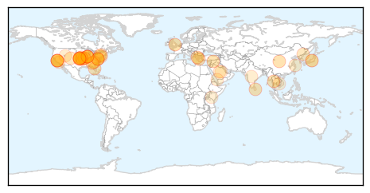
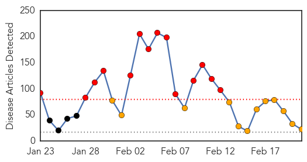

Unknown
30-Day Web Trend
1 alerts, 0 warnings

30-Day Twitter Trend
0 alerts, 0 warnings

Article Locations
Article Confidences

Top Articles:
- 0.963
- Bedford Hospital warning following increase in cases of Norovirus in Bedford this winter
- 0.952
- A Deadly Virus Has Been Discovered And It's Right Here
- 0.952
- Kansas Man Succumbs to Togothovirus, is First Human Victim.
- 0.939
- 2 dead, more than 170 potentially exposed
- 0.917
- Chicago Tribune
- 0.917
- Chicago Tribune
- 0.917
- Chicago Tribune
- 0.917
- Chicago Tribune
- 0.914
- Kansas man’s death leads CDC officials to discover scary new disease
- 0.910
- 21.02.06 Sri Lanka poultry farmers alerted on bird flu
- 0.910
- The world windows to Thailand
- 0.908
- CDC Says New Tick-Borne Virus May Have Killed Kansas Man
- 0.903
- US authorities discover deadly 'Bourbon' virus
- 0.901
- UCLA outbreak highlights challenge of curbing infections
- 0.875
- Sudan Vision Daily
- 0.854
- How Arachnids May Reveal Looming New Threats to American Public Health—Bourbon Virus
- 0.816
- US Health Officials Push For Stricter 'Superbug' Defense
- 0.784
- Los Angeles hospital warns 179 patients possibly exposed to ‘superbug’
- 0.757
- Five things you should know about the L.A. ‘superbug’ outbreak
- 0.747
- 53 H7N9 human cases reported in Guangdong
- 0.745
- Youth fighting ‘superbug’ infection from Los Angeles outbreak
- 0.743
- New Virus In Kansas : CDC Confirms One Dead From Newly Discovered Bourbon Virus
- 0.741
- UPDATE 1-Youth fighting 'superbug' infection from Los Angeles outbreak
- 0.735
- Wendy Banning talks about losing her husband to hantavirus
- 0.733
- Newly found virus blamed for death of Kansas man
- 0.720
- Student, 18, Struggling to Survive After Being Infected with "Superbug"
- 0.718
- Youth fighting 'superbug' infection from Los Angeles outbreak
- 0.665
- New Information On Superbug Infection « CBS Philly
- 0.659
- Togothovirus claims its first human victim, a Kansas man
- 0.655
- FDA knew of design flaw in scope linked to UCLA superbug
- 0.640
- Lawyer: Teen infected by ‘superbug’ struggling to survive
- 0.632
- Youth Fighting 'Superbug' Infection From Los Angeles Outbreak
- 0.631
- U.S. health officials to seek stricter 'superbug' defense
- 0.630
- Youth fighting ''superbug'' infection from Los Angeles outbreak
- 0.628
- One more H7N9 case reported in Guangdong
- 0.625
- CRE outbreak: You’re due to go in for a procedure. Should you be worried?
- 0.602
- UCLA notifies patients who received endoscopic procedures
- 0.594
- Exclusive: U.S. health officials push for stricter 'superbug' defense
- 0.594
- Reusable medical devices known to spread 'superbugs' will come with new instructions
- 0.593
- Modern Healthcare Modern Healthcare business news, research, data and events
- 0.591
- Sick and tired: Institute of Medicine proposes new diagnostic criteria for chronic fatigue syndrome
- 0.564
- Schools refuse to enroll students with AIDS
- 0.558
- Drug-Resistant Malaria May Soon Reach the Indian Border
- 0.557
- الاخبار المصورة
- 0.548
- الاخبار المصورة
- 0.530
- Specialized endoscope raises 'superbug' safety concerns
- 0.525
- Global travel may encourage anti-malaria drug resistance
- 0.509
- Kenya : Researchers work round the clock to control maize disease
Top Tweets:
-
No tweets found for Feb 21, 2015
Measles
30-Day Web Trend
14 alerts, 12 warnings

30-Day Twitter Trend
3 alerts, 0 warnings

Article Locations

Article Confidences
Top Articles:
- 0.984
- Measles reported in Copenhagen: Nearly 200 may have been exposed
- 0.963
- No End In Sight for Measles Outbreak Which Remains Largely Uncontrolled
- 0.958
- Measles outbreak at 149 cases in eight states, Canada and Mexico
- 0.955
- Measles cases continue to appear nationwide
- 0.934
- More measles cases tied to Disneyland, Illinois day care Republican American
- 0.919
- Health Officials Release Lists Of Potential Measles Exposure Sites
- 0.843
- All Washoe Measles Lab Tests Are Negative
- 0.841
- Dana Hills High School
- 0.832
- A public health necessity
- 0.754
- Health district confirms 6th case of measles in Southern Nevada
- 0.746
- Fourth measles case confirmed in Clallam County; day care won’t accept kids who aren’t vaccinated
- 0.727
- 4th case of measles confirmed in Port Angeles
- 0.707
- Leon County Schools Measles Advisory
- 0.698
- Health department asks residents to make sure they are vaccinated
- 0.696
- 'Superbug' confirmed in 3 patients at local hospital
- 0.648
- Measles – the Outbreak and the Outrage
- 0.643
- Personal freedom, parental choice and vaccines
- 0.633
- Should We Require Vaccinations?
- 0.632
- Teacher vaccinations latest issue in war on illness in the classroom
- 0.618
- Most Collier, Lee students vaccinated but some schools fall short of goal
- 0.611
- HEALTH: Vaccination status not necessarily ideological
- 0.533
- Few rules on teacher vaccinations as U.S. deals with measles outbreak
Top Tweets:
-
No tweets found for Feb 21, 2015